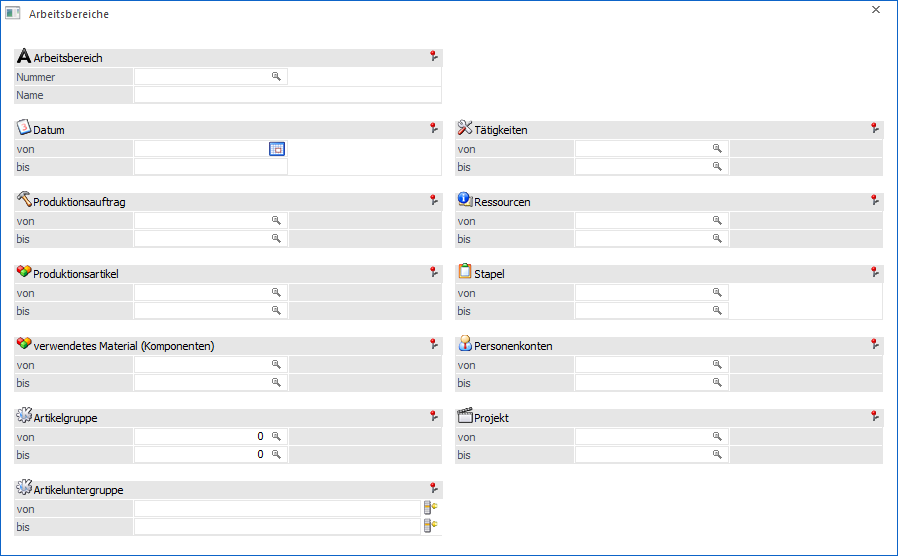
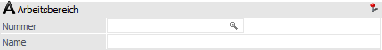
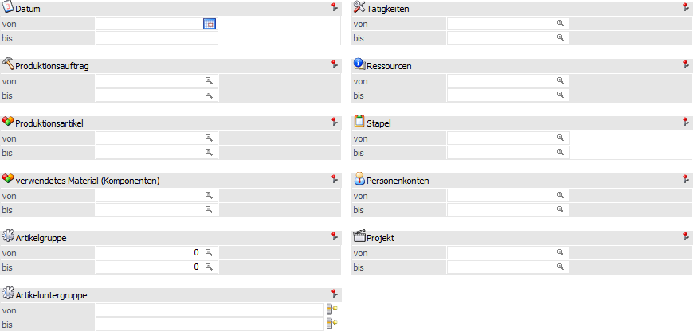
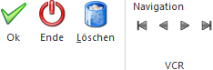

Im Menüpunkt
1 WinLine PPS
1 Stammdaten
1 Arbeitsbereiche
kann unter einer Nummer ein Arbeitsbereich definiert werden. Der Arbeitsbereich fungiert hierbei als ein Voreinstellungs-Schema (welche Produktionsartikel, welches Datum, usw.), welches dann in den wichtigsten Menüpunkten (z.B. Leitstand, Materialentnahmeschein, Arbeitsschein) geladen werden kann. D.h. wenn ein Arbeitsbereich in dem Menüpunkt selektiert wird, werden die entsprechenden Selektionsfelder im Menüpunkt voreingestellt.

Arbeitsbereich

Ø Nummer
An dieser Stelle wird die Nummer des Arbeitsbereiches hinterlegt unter welcher dieser aufgerufen werden kann. Diese Nummer kann nicht nur aus Zahlen sondern auch aus Zeichen bestehen (20-stellig).
Ø Name
Hier erfolgt die Hinterlegung der genauen Bezeichnung des Arbeitsbereiches (50-stellig).
Selektion

Folgende Eingabefelder stehen für den Arbeitsbereich zur Verfügung:
Ø Datum von / bis
An dieser Stelle kann ein fixer Datumsbereich angegeben werden, welche betrachtet werden soll.
Hinweis
Mit Hilfe des Buttons " - Zeitraum" kann ein variabler Zeitraum vorgegeben werden, welcher zur Laufzeit mit dem "richtigen" Datum gefüllt wird. Folgende Vorgaben stehen hierbei zur Verfügung:
ü Heute
ü aktuelle Woche
ü letzte 7 Tage
ü letzte 14 Tage
ü aktueller Monat
ü 1. Quartal
ü 2. Quartal
ü 3. Quartal
ü 4. Quartal
ü Aktuelles Jahr
ü Vorjahr
ü Alle
Nach der Auswahl eines Zeitraums wird das "bis"-Datumsfeld automatisch für eine weitere Eingabe gesperrt. Eine definierte Vorgabe kann anschließend durch eine Interaktion im "von"-Datumsfeld (+-Taste, Entf-Taste, F3-Taste, manuelle Datumseingabe, etc.) aufgehoben werden, so dass das Datumsfeld "bis" wieder beschreibbar wird.
Ø Produktionsauftrag von / bis
Welche Produktionsaufträge sollen berücksichtigt werden.
Ø Produktionsartikel von / bis
Welche Produktionsartikel sollen bearbeitet bzw. selektiert werden.
Ø verwendetes Material (Komponenten) von / bis
Welche Stücklisten-Rohstoffteile sollen berücksichtigt werden.
Ø Artikelgruppe von / bis
Welche Artikelgruppen sollen bearbeitet bzw. selektiert werden (betrifft den Produktionsartikel).
Ø Artikeluntergruppe von / bis
Welche Artikeluntergruppen sollen bearbeitet bzw. selektiert werden.
Ø Tätigkeiten von / bis
Welche Tätigkeiten sollen bearbeiten werden.
Ø Ressourcen von / bis
Angabe welche Ressourcen berücksichtigt werden sollen. Es werden nur jene Projekte bzw. Arbeitsschritte angezeigt, bei denen die angegebenen Ressourcen reserviert wurden.
Ø Stapel von / bis
Welche Stapelnummer sollen bearbeiten bzw. selektiert werden.
Ø Personenkonten von / bis
Welche Personenkonten sollen berücksichtigt werden.
Ø Projekt von / bis
Welche Projekte sollen bearbeiten bzw. selektiert werden.
Buttons

Ø Ok
Durch Anwahl des Buttons "Ok" bzw. der Taste F5 werden die Änderungen gespeichert.
Ø Ende
Mit Hilfe des Buttons "Ende" bzw. der Taste ESC wird der Programmbereich verlassen und alle nicht gespeicherten Änderungen verworfen.
Ø Löschen
Durch Drücken des Buttons "Löschen" kann nach einer Sicherheitsabfrage der Arbeitsbereich gelöscht werden.
Ø VCR-Buttons
Über die so genannten VCR-Buttons kann durch Mausklick zwischen den einzelnen Stammdatensätzen (Arbeitsbereiche) geblättert werden.
ü  Damit kann der erste Arbeitsbereich angesprochen werden.
Damit kann der erste Arbeitsbereich angesprochen werden.
ü  Damit kann der vorherige Arbeitsbereich angesprochen werden.
Damit kann der vorherige Arbeitsbereich angesprochen werden.
ü  Damit kann der nächste Arbeitsbereich angesprochen werden.
Damit kann der nächste Arbeitsbereich angesprochen werden.
ü  Damit kann der letzte Arbeitsbereich angesprochen werden.
Damit kann der letzte Arbeitsbereich angesprochen werden.